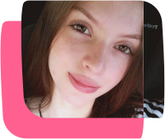

Sobre
Graduada em Design Gráfico pela UNIVALI - Universidade do Vale do Itajaí.
Experiência no desenvolvimento de comunicação visual , conteúdo para mídias sociais e produção gráfica (outdoor, panfleto, banner, cartão de visita, etc). Principais programas: Adobe Illustrator e Adobe Photoshop.
Interesse em UI Design, desenvolvendo projetos no Figma.